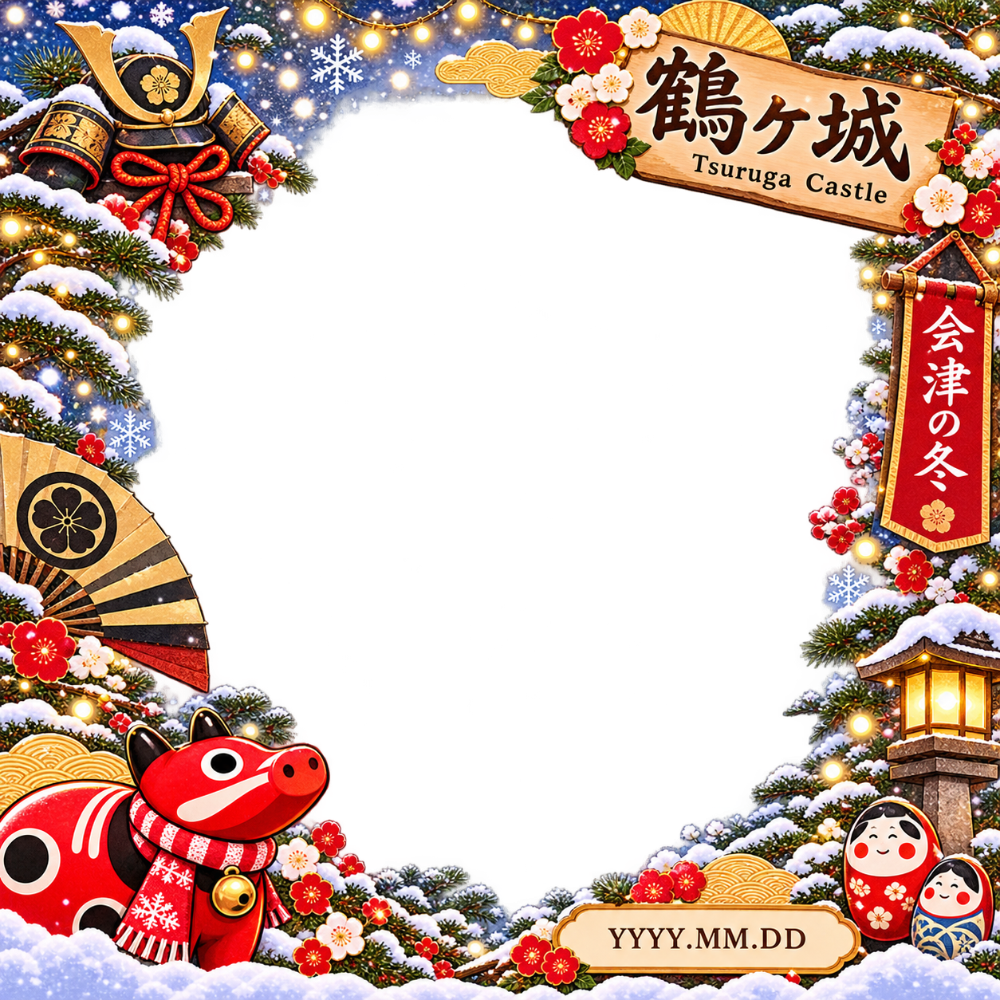

鶴ヶ城 冬の思い出
Tsuruga Castle Winter Memories · 無料の記念写真

「カメラを起動」を押して始めてください。
写真はこの端末上で合成され、サーバーには送信されません。保存するには撮影後に「写真を保存」を押してください。
会津若松 · AIZU-WAKAMATSU
Tsuruga Castle Winter Memories · 無料の記念写真

「カメラを起動」を押して始めてください。
写真はこの端末上で合成され、サーバーには送信されません。保存するには撮影後に「写真を保存」を押してください。
会津若松 · AIZU-WAKAMATSU